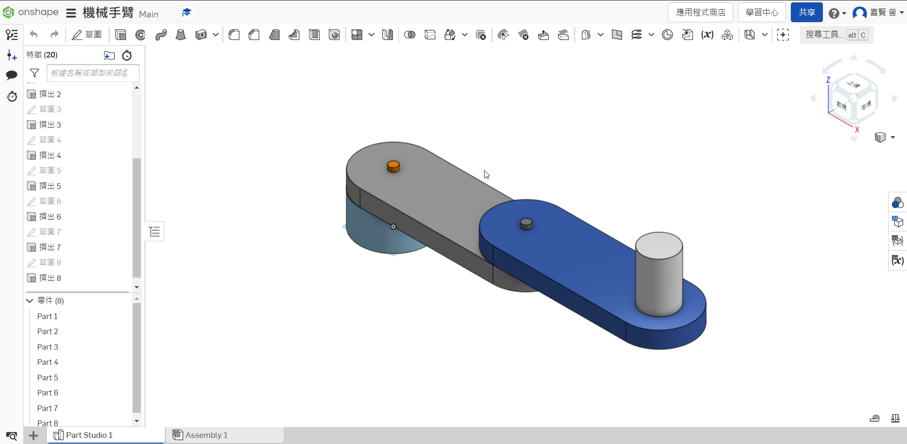

學習python <<
Previous Next >> stage3模擬
W16
1.onshape零件檔：
Onshape零件圖網址

2.建立 CoppeliaSim 4.1.0 MTB robot 場景
雲端連結W16_exam：
W16_exam 雲端硬碟
3.吸盤設置
4.逆向運動學函式
lua程式：
function moving(x,y)
a=0.4
b=0.4
c=math.pow((math.pow(x,2)+math.pow(y,2)),0.5)
s=(a+b+c)/2
area=math.pow((s*(s-a)*(s-b)*(s-c)),0.5)
h=area/(2*c)
deg1_base=math.atan(x/y)
if x<0 and y<0 then
deg1_base=deg1_base+math.pi
end
deg1_tri=math.asin(h/a)
deg1=deg1_base+deg1_tri
deg2=math.pi-(0.5*math.pi-deg1_tri)-math.acos(h/b)
deg3=deg2-deg1
sim.setJointTargetPosition(joint01,deg1)
sim.setJointTargetPosition(joint02,-deg2)
sim.setJointTargetPosition(joint03,deg3)
end
function sysCall_threadmain()
joint01=sim.getObjectHandle('joint1')
joint02=sim.getObjectHandle('joint2')
joint03=sim.getObjectHandle('joint3')
jointz=sim.getObjectHandle('jointz')
sim.setJointTargetPosition(joint01,0)
sim.setJointTargetPosition(joint02,0)
sim.setJointTargetPosition(joint03,0)
sim.setJointTargetPosition(jointz,0)
sim.setIntegerSignal("pad_switch",1)
sim.setJointTargetPosition(jointz,-0.1)
sim.wait(5)
while sim.getSimulationState()~=sim.simulation_advancing_abouttostopre do
sim.setJointTargetPosition(jointz,0)
moving(0.2,0.7)
sim.wait(5)
sim.setIntegerSignal("pad_switch",0)
sim.wait(5)
sim.setIntegerSignal("pad_switch",1)
sim.wait(5)
sim.setJointTargetPosition(jointz,-0.1)
sim.wait(5)
sim.setJointTargetPosition(jointz,0)
sim.wait(5)
moving(-0.3,-0.55)
sim.wait(5)
sim.setIntegerSignal("pad_switch",0)
sim.wait(5)
sim.setIntegerSignal("pad_switch",1)
sim.wait(5)
sim.setJointTargetPosition(jointz,-0.1)
sim.wait(5)
sim.setJointTargetPosition(jointz,0)
sim.wait(5)
end
end
function sysCall_cleanup()
-- Put some clean-up code here
end
-- See the user manual or the available code snippets for additional callback functions and details
sim.getObjectHandle('joint1')
sim.getOjectHandle (' ') 是指處理物件的相關。
sim.setJointTargetPosition(joint01,deg1)
sim.setJointTargetPosition( , ) 是指設定軸的目標位置(上方處理完的物件 , 給予速度或是其他的條件 )。
while sim.getSimulationState()~=sim.simulation_advancing_abouttostopre do
循環的程式瑪
鍵盤控制：
function sysCall_init()
joint01=sim.getObjectHandle('joint1')
joint02=sim.getObjectHandle('joint2')
joint03=sim.getObjectHandle('joint3')
jointz=sim.getObjectHandle('jointz')
sim.setJointTargetPosition(joint01,0)
sim.setJointTargetPosition(joint02,0)
sim.setJointTargetPosition(joint03,0)
sim.setJointTargetPosition(jointz,0)
deg1=0
deg2=0
deg3=0
end
function sysCall_actuation()
message,auxiliaryData=sim.getSimulatorMessage()
while message~=-1 do
if (message==sim.message_keypress) then
if (auxiliaryData[1]==97) then
deg1=deg1+1
sim.setJointTargetPosition(joint01,deg1*math.pi/180)
end
if (auxiliaryData[1]==100) then
deg1=deg1-1
deg3=deg2-deg1
sim.setJointTargetPosition(joint01,deg1*math.pi/180)
end
if (auxiliaryData[1]==119) then
deg2=deg2+1
deg3=deg1-deg2
sim.setJointTargetPosition(joint02,deg2*math.pi/180)
end
if (auxiliaryData[1]==115) then
deg2=deg2-1
deg3=deg1-deg2
sim.setJointTargetPosition(joint02,deg2*math.pi/180)
end
if (auxiliaryData[1]==2008) then
sim.setJointTargetPosition(jointz,-0.1)
sim.setIntegerSignal("pad_switch",1)
end
if(auxiliaryData[1]==2007) then
sim.setJointTargetPosition(jointz,0)
end
if(auxiliaryData[1]==32) then
sim.setIntegerSignal("pad_switch",0)
end
sim.setJointTargetPosition(joint03,deg3*math.pi/180)
end
message,auxiliaryData=sim.getSimulatorMessage()
end
end
message,auxiliaryData=sim.getSimulatorMessage()
是指訊息 , 輔助參數或是數據 = 模擬得到模擬器訊息。
while message ~= -1 do
是指當訊息為非 -1 得做以下的。
5.Python remote API
import sim as vrep
import math
import random
import time
import math
def moving(x,y):
a=0.4
b=0.4
c=math.pow((math.pow(x,2)+math.pow(y,2)),0.5)
s=(a+b+c)/2
area=math.pow((s*(s-a)*(s-b)*(s-c)),0.5)
h=area/(2*c)
deg1_base=math.atan(x/y)
if x<0 and y<0 :
deg1_base=deg1_base+math.pi
deg1_tri=math.asin(h/a)
deg1=deg1_base+deg1_tri
deg2=math.pi-(0.5*math.pi-deg1_tri)-math.acos(h/b)
deg3=deg2-deg1
vrep.simxSetJointTargetPosition(clientID,joint01,deg1,opmode)
vrep.simxSetJointTargetPosition(clientID,joint02,-deg2,opmode)
vrep.simxSetJointTargetPosition(clientID,joint03,deg3,opmode)
print ('Start')
vrep.simxFinish(-1)
clientID = vrep.simxStart('127.0.0.1', 19997, True, True, 5000, 5)
if clientID != -1:
print ('Connected to remote API server')
res = vrep.simxAddStatusbarMessage(
clientID, "40823222 ",
vrep.simx_opmode_oneshot)
if res not in (vrep.simx_return_ok, vrep.simx_return_novalue_flag):
print("Could not add a message to the status bar.")
opmode = vrep.simx_opmode_oneshot_wait
STREAMING = vrep.simx_opmode_streaming
vrep.simxStartSimulation(clientID, opmode)
ret,joint01=vrep.simxGetObjectHandle(clientID,"joint1",opmode)
ret,joint02=vrep.simxGetObjectHandle(clientID,"joint2",opmode)
ret,joint03=vrep.simxGetObjectHandle(clientID,"joint3",opmode)
ret,jointz=vrep.simxGetObjectHandle(clientID,"jointz",opmode)
vrep.simxSetJointTargetPosition(clientID,joint01,0,opmode)
vrep.simxSetJointTargetPosition(clientID,joint02,0,opmode)
vrep.simxSetJointTargetPosition(clientID,joint03,0,opmode)
vrep.simxSetIntegerSignal(clientID,"pad_switch",1,opmode)
vrep.simxSetJointTargetPosition(clientID,jointz,-0.1,opmode)
time.sleep(3)
vrep.simxSetJointTargetPosition(clientID,jointz,0,opmode)
while True:
moving(0.2,0.7)
time.sleep(3)
vrep.simxSetIntegerSignal(clientID,"pad_switch",0,opmode)
time.sleep(3)
vrep.simxSetIntegerSignal(clientID,"pad_switch",1,opmode)
vrep.simxSetJointTargetPosition(clientID,jointz,-0.1,opmode)
time.sleep(3)
vrep.simxSetJointTargetPosition(clientID,jointz,0,opmode)
moving(-0.3,-0.55)
time.sleep(3)
vrep.simxSetIntegerSignal(clientID,"pad_switch",0,opmode)
time.sleep(3)
vrep.simxSetIntegerSignal(clientID,"pad_switch",1,opmode)
vrep.simxSetJointTargetPosition(clientID,jointz,-0.1,opmode)
time.sleep(3)
vrep.simxSetJointTargetPosition(clientID,jointz,0,opmode)
40823214 直播教學影片：
學習python <<
Previous Next >> stage3模擬